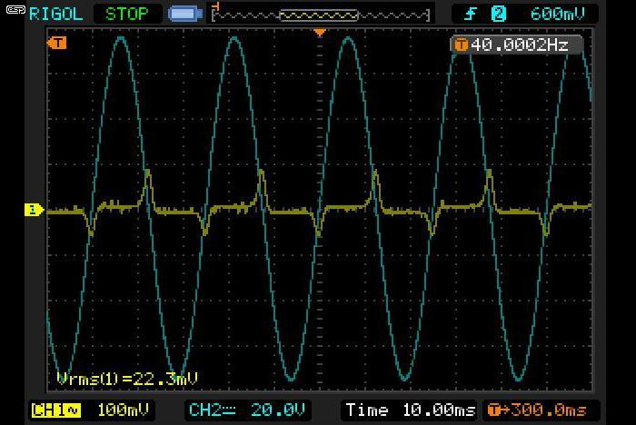

|
|
| Elliott Sound Products | High Voltage Audio Systems |
By Rod Elliott (ESP)
Page Created 10 June 2012
 ArticlesMain Index
ArticlesMain IndexThere is a great deal of confusion about the use of high voltage (aka 'constant voltage') speaker lines for commercial applications. Common voltages used are 25V, 50V, 70V and 100V, and there are favourites that are country dependent. In some cases, this is due to regulatory restrictions on the use of voltages deemed 'hazardous' - typically anything over 32V RMS. For this discussion, I will use the common 70 V line in the examples, although 100V is the de-facto standard in Australia. The calculations (and the problems) are no different for any line voltage, and conversion is simple.
Some installations may require that the cables be installed in conduit if over a specified voltage, and it may also be a requirement that one side of the speaker line be earthed in the same way (and presumably for the same reasons) that the neutral is earthed in mains distribution systems.
In the US, 70V lines are the most common, and the voltage is (apparently) based on a requirement that the AC peak voltage must be no more than 100 volts - I don't know if this is still current, but it's probably too late to change now regardless. Higher voltages may require conduit, which increases the cost and difficulty of the installation. The RMS value of a 100V peak sinewave is 70.7V, hence the 70V limit. In Australia, Europe and many other countries, 100V lines are more common. The choice will always depend on local regulations and system requirements.
There seems to be a trend towards renaming 'constant voltage', '70V' and '100V' to 'high voltage audio'. Presumably this is due to the confusion caused by the more familiar terms, because the uninitiated will be unaware that the voltage is not constant, nor is it 70V or 100V. I tend to support the change, as there is no doubt that the traditional terms are somewhat untidy - the implication and reality are very different. However, I will still use the 'old' terminology for most of this article because I'm used to it.
Before discussing the issues and difficulties faced, first we must look at why commercial sound systems use high voltage lines in the first place. The general idea is 'borrowed' from the way mains power is distributed from the power station. If power were simply delivered at 230V (or 120V) from power station to homes and businesses, the current would be extremely high, requiring very heavy gauge conductors to minimise losses. This is uneconomical in the extreme, so the current is delivered at high voltage (such as 330kV) to local sub-stations, where it's reduced to a lower voltage (e.g. 11kV) for local area distribution, and finally reduced again by pole transformers or similar to the normal voltage we expect from power outlets.
This process might seem inefficient, but transformers have low losses and the system is the most efficient way to distribute power over long distances. As an example, if a local area draws 4,350 amps from the mains at 230V (1 MW), this is transformed to only 91A at 11kV. Line losses with sensible sized conductors are far lower, so thinner wires can be used with comparatively low loss due to cable resistance. At 330kV the initial 4,350A is only 3A, and we are still delivering a megawatt! Note that I have made no allowance for losses, but you get the idea.
It's exactly the same with distributed audio signals, except (of course) the voltages and power levels are far lower. The basic idea is that the output from the amplifier will be 70V RMS at full power, and small transformers are used at each speaker to reduce the voltage to get the desired power from the speaker. Figure 1 shows the general wiring scheme. I have included parts that I consider essential, but seem to be ignored elsewhere, and the drawing also shows tapped line transformers and an attenuator.
Tapped transformers are common, as they allow different zones to have different power (and hence SPL). Re-entrant horns are popular for outdoor areas and for large indoor areas where background noise is a problem. Attenuators are a bit more complex than the simple pot shown, but serve the same purpose - occupants of an area can set the volume to suit the environment. Attenuators are available for both 70/100V lines or nominal 8 ohm circuits, but are normally not permitted in emergency systems.
Figure 1 - General Wiring Scheme For Constant Voltage Audio Distribution
Each of the sections shown in the above diagram is covered in detail below. The high pass filter and DC protection are not normally even mentioned by suppliers of 'constant voltage' line components, but are essential to obtain maximum fidelity and to protect the amplifier from the rather evil load presented by the line output transformer at low frequencies. There are also additional modules that should be used, depending on the application. One of the most important of these is an input clipping circuit and a good peak limiter, both set to ensure that the maximum line voltage is not exceeded. Neither is suggested by most suppliers, and they are not commonly offered as part of the system. Some suppliers do have peak limiters, usually as an option.
As noted earlier, it must be made clear that 70V, 100V (or other voltage) and 'constant voltage' are somewhat misleading terms - the claimed voltage is (intended to be) reached at the limit of the amplifier's output, namely at full power. The actual maximum voltage on the line can be variable, especially if the amplifier and line drive transformer are not correctly matched. With normal programme material, the measured RMS voltage will be somewhere between 10 - 30V at the onset of clipping, depending on the programme material itself and the line voltage being used. In this respect, the term 'high voltage audio' is less ambiguous.
The term 'constant voltage' comes from the fact that the line voltage doesn't change significantly as speakers are added or removed - it remains constant, regardless of load. In reality there are changes of course, but they are small because the distribution line has a low impedance source. It is extremely important that the installer understands the difference between source impedance and load impedance!
Finally, why was this article written? There seem to be many people who are firmly convinced that you can hook a line output transformer up to "any old amplifier" and get a 70V line. "Nothing to it" they say. Well, that's true, but only if you don't mind blowing up amplifiers or don't care what the end result is like. This is an industry that's been going strong for many years, but not on the basis of hooking a transformer to just any amplifier. It might work for a while, but there's a lot more to it than you might expect.
(Note that parts of this section were adapted from the Lenard Audio site with permission).
There is much info on the Net about the use of audio in shopping centres, lifts (elevators if you insist) and the like. I have no intention of delving into the psychological or psycho-acoustics of these systems, this is a purely technical article and whether (or not) background noise (sometimes called "music" by the installers) constitutes an attempt at mind control is not open for discussion.
However, there is no doubt whatsoever that if the background "noise" is distorted or suffers from poor fidelity in other areas, it will have exactly the opposite effect from that intended. Anything that subjects employees or shoppers to awful sound quality will either drive them away or insane - perhaps both. Placement of speakers is usually limited to ceilings, and whether or not that's ideal isn't even worth discussing - in most cases there's no other choice.
Many of the installed systems also serve as emergency evacuation alarms, and these are subject to strict regulation in most developed countries. Three things are of primary importance ...
To ensure intelligible speech, distortion has to be reasonably low - no more than perhaps 5% THD (total harmonic distortion) or so. Alarm tones may be severely distorted (if permitted by the regulations), and this actually increases both loudness (real and apparent) and penetration.
Background "music" should be reproduced with the lowest distortion possible, and at a level that does not impose on anyone. If the source is a radio station (which I hear fairly often), the tuner must have a decent antenna and be properly tuned to the station! Sounds easy enough, but it's not uncommon to hear radio station background where neither of these requirements has been met. The result is grating, to put it mildly.
For new installations, it would be useful if architects consulted with a reputable installer before deciding on speaker placement. Acoustics is not a simple field, and unless one has experience the results can easily be a disaster.
There are many excellent books on commercial sound installation, and one of the most respected is 'Sound System Engineering' by Don and Carolyn Davis.
Quality cable and connections are essential, including clear and detailed installation documentation that remains on site. Many small ceiling speakers have poor fidelity, but there are exceptions. Cost is not a guide to audio quality - many "big brands" are just as bad as cheaper alternatives, and may even come from the same factory.
It is wise to audition speakers before installation. This allows some measurements to be made to verify sensitivity and transformer performance, and to ensure that the dimensions are as claimed. It's not at all uncommon to order products, only to find that there are significant changes from those supposedly identical units used at previous installations.
The technical requirements are often for many small speakers to be spread over large areas. Cable length can be hundreds of metres. To minimise cable loss, the amplifier output is increased to a higher voltage through a step-up line transformer. Each speaker has a step-down line transformer.
The line system (assuming 70V lines) normally operates at around 10-30V RMS but can peak at 70V. All line transformers have a limited bandwidth that restricts low frequency performance in particular. A skilled electronics technician should always check samples of line drive transformers (if separate from the amplifier) and speaker transformers.
The specifications provided for power amplifiers and speakers with line transformers are commonly referenced only to power (in Watts) and the rated line voltage. This information is not sufficient for accurate calculations. An electronics technician will require an hour or more to take necessary measurements and to determine the missing information. This is essential to make accurate calculations for the installation.
Note that the steps described below are an outline of the basic procedure. All is explained in much greater detail below.
1 - Determine the amplifier power needed for the installation, based on the number of loudspeakers, loudspeaker efficiency and the SPL that is expected in each area. If total power is too high (over 200W), use several smaller amplifiers rather than one very large one. Once speaker power is known, add a minimum of 1.5dB (about 40%). If you worked out that you'd need 70W in total, use a 100W amp. There are losses in the system, and this accounts for typical losses and allows some room for overall level adjustment.
2 - Measure the voltage ratio (which is the same as the turns ratio) of the amplifier output transformer, all taps unloaded. The voltage ratio (turns ratio) on some transformers varies widely, depending on rated power and line voltage. There is usually an allowance for insertion loss (see 3.4), so voltage will be slightly higher than expected. For example, the turns ratio may be 1:3.6 instead of the theoretical 1:3.5 for a 100W 70V transformer.
It is essential to know the actual load impedance for the line transformer. This information is rarely quoted in specifications that come with the amplifier or transformer. Deducing this from the power-load specifications supplied with amplifier and speakers is educated guess work at best, and rarely accurate. The amplifier line transformer must actually be measured!
3 - Measure the amplifier 'rail to rail'. If the amplifier has a rail supply of ±30V (60V total) the output will be about 20V RMS. If the transformer has a turns ratio of 1:3.5 the secondary voltage at full power will be 70V RMS. The amplifier's output voltage can also be measured using an audio oscillator set to around 400Hz and a speaker driven from a line transformer as a monitor. You will be able to hear the onset of clipping as a harshness on top of the tone. When you hear that, reduce the level until the harshness just disappears, and measure the RMS voltage at the amp output.
4 - Measure the power of the amplifier under load. Determine whether the amplifier's output is designed for 4 or 8 ohm loads. The output transformer impedance ratio is the square of the turns ratio. If the amplifier is designed to give 100Watt (20V RMS into 4 Ohm) and you need a 70V line, the turns/ voltage ratio of the transformer must be 1 : 3.5 (20 * 3.5 = 70) or slightly higher to account for losses. The combined load impedance must be no less than 49 ohms. This is easily calculated ... The impedance ratio is 3.5² or 1:12.25, so the secondary impedance is 4 * 12.25 = 49 ohms. Otherwise, you can use the chart shown in Figure 2.
Figure 2 - Power Vs Impedance Chart
Note that too many speakers on the line will overload the amplifier. The total load impedance presented by all speakers must never be lower than the value calculated by the above formula. A lower than recommended load impedance can easily destroy an amplifier. The total number of speakers must represent a load no lower than that for which the amplifier is designed, regardless of power. The load directly affects the running temperature of an amplifier, and therefore its reliability.
Recorded music is usually compressed and has a limited dynamic range. Assuming 6dB dynamic headroom (or peak to average ratio), the amplifier can be driven at a maximum average voltage no greater than ½ of that for full power. The power delivered is ¼ of the maximum. It is generally wise to allow for amplifiers to run at no more than 70% of the rated peak power, so there is some room to make adjustments to compensate for losses. For example, a 100W amp should never have to deliver more than 70W peak.
5 - For this example, a 100 Watt amplifier is required to deliver an average of 25V RMS of music on the 70V line, the line should be connected to the 1:3.5 turns ratio (70V) tapping of the output transformer. This will allow the total number of speakers connected to provide a load impedance no lower than the value determined in [4] above. If the total number of speakers to be connected will reflect a load impedance of less than that calculated, then the choices are ...
6 - Audition the speakers. Assume the speakers have no association with the specifications supplied, regardless of the model number or brand that is printed on the box. It is usually impossible to know in which factory the speakers were made or how many re-selling agents they encountered on their way to you. The brand does not necessarily indicate the actual manufacturer, nor does it signify a level of quality!
7 - The speaker line step-down transformer. This must be measured for ...
Saturation frequency
Actual turns and impedance ratios
8 - Decide on the power to be delivered to each speaker in the system. This is the maximum power that will be delivered to each speaker - the average will be around ¼ of the maximum. If the speakers are 8 ohms, then 2W requires 4V RMS. To obtain 4V from a 70V line a step-down ratio of 17.5:1 is required, and you'll need to select the closest available tapping. Be prepared to adjust your calculations to suit - especially if the transformer is intended for a different line voltage or is not accurate.
9 - Calculate the reflected impedance on the line, from each 8 ohm speaker on the 17.5:1 tap. The impedance is calculated from the square of the turn's ratio. (17.5² = 306.25) x 8 Ohm = 2450 ohms. If the total number of speakers connected to the line is (say) 50, and each speaker is connected to its 17.5:1 transformer tap, then the total impedance to the line is ...
2450 ohms divided by 50 = 49 ohms
The 100W amplifier is driving the line through its transformer from the 1:3.5 tap. The lowest load it can drive is 49 ohms, so no more speakers can be added. Note that there is no allowance for losses at this stage. Nor is there any scope for later additions, so the number of speakers should be reduced.
10 - From these calculations, this 100W amplifier is operating at an average of around 13W, and allows around 6dB of headroom for the music transients. The transients will peak at 70W, so there is a little headroom but no more speakers can be added to the system. It is wise to ensure that the amplifier is not fully utilised - it is better to have perhaps 40-45 speakers on the line rather than the full 50. Doing so gives you some 'wiggle room' should it be needed.
Repeat steps 1 to 10 until you have a sensible setup that uses equipment you can actually buy and that is within budget. There's little point having a theoretically perfect system if it relies on equipment that doesn't exist or is so expensive that no-one will pay for it.
This procedure is broken down into more precise steps in the next section, and includes examples for two line drive transformers and a representative speaker transformer. The one I used is actually designed for 100V lines, which is a small advantage in some respects.
Some installations will require the use of column speakers, which may be glorified by referring to them as 'directional arrays' for example. These will almost always operate at significantly higher power than ceiling speakers, and typically consist of a vertical row of small speakers.
Column speakers are often seen in churches, shopping centres, travel terminals, gymnasiums etc. Their intended application is for announcements and background music. The advantage of a column is its simplicity and being visually unobtrusive. The fidelity of a column can be no better than that of the individual speakers, regardless of marketing claims. Some may include a horn loaded compression driver to reproduce the high frequencies, and this will give better overall dispersion and fidelity if done correctly.
Column Directivity
A single speaker has a varying conical dispersion. As more speakers are added vertically, the sound from each speaker is "compressed" by the ones above and below. This results in increased horizontal dispersion and reduced vertical dispersion.
In reality the horizontal directivity is limited by wavelength and is inconsistent. High frequencies (wavelengths less than distance between speakers or the diameter of the speakers) result in intense vertical lobes. These lobes cause phase cancellations and loss of intelligibility, and the high frequency energy is decreased. One solution is to cross over the high frequencies to a single tweeter or a small horn.
Some small (and often expensive) columns have a complex passive crossover network that reduces energy or high frequencies to the outside speakers as the frequency increases, so only the centre speaker remains working at the highest frequency. This is sometimes known as a "tapered" array. At lower frequencies (wavelengths longer than column length) dispersion control is no longer effective. Typical column speakers all have a limited and inconsistent horizontal dispersion.
There are many things that must be considered for any installation. Many of these are totally dependent on the specific installation and cannot be determined without knowing all distances, required SPL (sound pressure level, in dB), signal sources and the environment. Outdoor systems will usually need much more power than those indoors, but every installation will be different.
The following steps are intended to provide a starting point, and give you enough information to be able to quantify the many different pieces of equipment that will be needed for the install. The examples are just that ... examples. You need to be able to adapt the examples to the gear you have to work with - this will often be specified by someone else, and it may not be accurate.
If you have all the information, it becomes a relatively easy matter to verify the original design and/or make adjustments as needed to make the system perform as expected.
Remember that a 70V line will have 70V RMS at the point of amplifier clipping (or limiting). It doesn't matter if the amp is 10W or 500W, the voltage is unchanged, and only the power changes - based on the maximum available current from the amplifier. Predictably, and at least in theory, you can connect 10 x 1W line speakers to the 10W amp, and 500 of the same speakers to the 500W amp. The actual number will always be lower than the theoretical limit. Each 1W speaker presents an impedance of 4,900 ohms to the line.
Likewise, 0.5W speakers will have an impedance of 9,800 ohms, 2W speakers are 2,450 ohms, 5W speakers are 980 ohms, etc. Simply divide 4,900 by the power in Watts. The actual impedance of each speaker will vary significantly though, and the savvy installer will test each piece of the equipment so there are no surprises. Reality will be different from theory!
Some installers use impedance meters so the total line impedance can be verified before the amp is connected (or to locate system faults), and such an instrument may be very useful if you do a lot of work with high voltage audio systems. However, there's a lot more involved, and that's why this article has so much information that you just don't see elsewhere.
Before you even start, you need to know the expected sound pressure level (SPL) within the installation. Re-entrant horns with compression drivers are very efficient (up to ~110dB/1W/1m), but they don't usually sound wonderful. They are well suited for alarms and speech announcements in very noisy environments, but have a very limited frequency range - typically around 250Hz-8kHz. Normal ceiling speakers almost always have a wider response, but are more likely to be around 90dB/W/m or perhaps even less. You need to know if the system simply provides background "music", or does it do dual duty as a paging system and/or emergency evacuation alarm?
How loud does each different input signal (music, announcements, alarms) have to be at the speaker locations? This determines the number of speakers needed, and that determines how many speakers can be driven by an amplifier of a given power rating. There are no easy guidelines for any of the above - some are determined by government regulation, others by the client's expectations and the installation environment. Ceiling height, distance between speakers, shop or other fittings and background noise all affect the amount of power that's needed. This is especially true for announcements, paging or emergency evacuation sirens.
There are installations where high voltage lines are run, but with very high power levels (500W or more). While these are not covered here, the principles are no different. For high power system installations you may find voltages of 200V RMS or more being used, as this reduces cable losses. Transformers at both ends become much larger and heavier, especially if frequencies down to 40Hz are required.
Distortion is to be avoided for speech and music, but may not be an issue for siren tones, as these are normally rather distorted already, and if the amplifier clips (distorts) due to being over-driven, the effect will usually be inaudible. Often, it will even help, because the distorted tone is not only louder, but far more irritating (good for getting attention!). A small amount of peak clipping is generally acceptable for voice announcements, but it should not exceed around 3dB. This means that a 100V peak speech signal can be clipped at 70V without serious loss of intelligibility.
In some cases, individual wall-mounted level controls may be used so that the level can be adjusted for some areas. There are suitable controls available for either the 70V line or the 8 ohm speaker output from the line speaker transformer. These are not likely to be permitted for emergency alarm or evacuation systems.
If re-entrant horns are used, it is essential that they are mounted in such a way as to ensure no-one can ever be very close to them, because of the very high SPL they can generate. In other cases (such as railway stations for example), they are typically operated at very low power, but in larger numbers than may be the case elsewhere. Automatic gain control may be used to raise the level when there is noise, such as a train entering or leaving the station. Some suppliers provide the equipment to do this.
Sirens and emergency announcements must be audible regardless of noise, and possible hearing loss is secondary to people being severely injured or killed because they couldn't hear the warnings. I don't know about my readers, but I'd rather suffer some temporary hearing loss than be burnt to death. Call me odd if you must. 
As noted in the overview, it is wise to actually measure the amplifier's output swing. It's not at all uncommon to find that the maximum line voltage is quite different from the nominal voltage - it may be higher or lower, mainly because the line drive transformer is not configured properly to the amplifier power or voltage swing. The result is that the amp may either be overloaded, or not delivering the power you expected and paid for. Remember that you need to keep at least 1.5dB of reserve - if you need 70W, use 100W (etc.). If the job is tricky or involves long cable runs, you may need to allow 3dB reserve, so 100W becomes 200W.
To measure the voltage swing properly, you need an oscilloscope so you can see exactly when the amp clips. A 100W/ 4 ohm amplifier should deliver 20V RMS when connected to a 4 ohm load - that's a peak-to-peak swing of just under 57V (±28.5V). It's common for most amps to deliver a bit more than their rated power, so you might measure up to 25V RMS or so (a bit over 150W), depending on the amp. If the transformer is designated as being suitable for a 100W/ 4 ohm amplifier, then with 25V RMS output, the line voltage will be higher than the nominal value.
A 70V tapping will give you 87.5V, and the 100V tapping will provide 125V at the onset of clipping. The clipping voltage will also vary slightly with mains voltage, but although that changes during the day the effects are minimal. If the amp's output is higher than the calculated value for the power delivered, then you should use the actual maximum line voltage for the calculation examples that follow - not the "nominal" voltage.
Likewise, one would hope that all transformers designed for line systems would be clearly marked, and that detailed specifications would be provided as a matter of course. Unfortunately, this is not the case, and most manufacturers and suppliers give the minimum amount of information possible. Perhaps they assume that installers are sufficiently skilled to know how to determine all the parameters, or maybe they don't care much either way.
Line output transformers are commonly rated for power, voltage taps, and sometimes frequency response. They almost always neglect to state if response is at full power or some lower "reference" level - I suspect the latter, as any audio transformer that can handle 150-200W at 20Hz is a very large piece of kit indeed. The voltage taps allow the installer to select the desired (or specified) line voltage when connected to an amplifier of the stated power rating. As described above, the actual voltage will almost certainly be different from the nominal value. Few if any - I've not seen it anywhere - transformers have provision for an additional winding to add or subtract a few volts to ensure the line voltage is within specification.
Likewise, the speaker transformers will usually provide taps for different power levels (e.g. 0.5W, 1W, 2W, 5W, etc.). If the 1W tapping is used, that is the maximum power that can be delivered to the speaker before the driving amplifier reaches its limits and starts to clip - assuming of course that the amplifier and line driver transformer are perfectly matched in all respects. The average power with programme material will usually be no more than around 250mW.
The reference used for this section uses the following ...
Regardless of amplifier power, the maximum voltage on the line will be 70 volts (RMS) when driven to the onset of clipping with a sinewave signal - but only if the amp and transformer are perfectly matched. The actual line impedance can be calculated, but the idea of the system is that (in theory at least) you don't need to know - the speaker transformer taps determine the power to the speaker, and you simply ensure that the sum of all the transformer taps never exceeds the amp's rating (100W for these examples).
For example, a 100W high voltage line system can have ...
While this is all fine in theory, there are many, many things that can go wrong. These include, but are not limited to ...
Most of these are easily addressed by following the appropriate procedures outlined by the manufacturers of the various parts or making repairs as needed. However, unless you have already run tests on the components you won't know if the ratings are accurate, nor will you know the limitations of the power amplifier when supplying power to a transformer load. There is very little anyone can do to stop later modifications or additions though, nor can you know who will do the work.
Speaker efficiency can easily bring you undone. One I looked at stated that "high efficiency means less power is needed" - this was for a speaker rated at 88dB/1W/1m. If they think that's efficient then I'd hate to see their 'inefficient' models. Above 90dB/1W/1m is acceptable, 95dB/1W/1m or better is pretty good, but below 90dB is woeful. Another 'high efficiency' speaker I looked at was only 86dB/1W/1m!
While most dedicated systems have the output transformer as an integral part of the amp, there are many after-market transformers that are readily available. While most are true transformers with isolated primary and secondary windings, some are auto-transformers. These have a single winding, with taps for input and various output voltages.
Auto-transformers have no galvanic isolation - the primary is simply part of the overall winding, but wound with heavier wire. As a result, they cannot be used where fully floating inputs or outputs are needed, nor can they be used safely with bridged amplifier outputs. In all other respects, they should be treated to the same tests as a "real" transformer. Auto-transformers are an economical alternative when the transformation ratio is less than 1:2
Figure 3 - Conventional & Auto-Transformers
The line drive transformer takes the comparatively low (20V RMS for example) output from the amplifier, and steps it up to provide the desired output voltage - there are more turns on the secondary than the primary, and the voltage is increased by the ratio of primary to secondary turns. While you'll rarely ever find out just how many turns are used, the ratio is easily determined by the method described in the sections below.
It is actually possible to work out exactly how many turns have been used, but there's little point and I won't bother with a description of the process. For those who are really interested, have a read through the articles about transformers on the ESP site. The technique is explained for anyone who wants to go that far.
The following table shows the measurements that were taken on the two line output transformers I have. The input voltage was a 10V RMS sinewave at 1kHz. All measurements are with the secondary unloaded. Rp is primary resistance, and Rs is secondary resistance.
| Toroidal Output Transformer, Rp = 0.16 Ω | ||||
| Tap | Rs | Volts Out | Turns Ratio | Z Ratio |
| 50 V | 1.36 | 25.87 | 1 : 2.59 | 1 : 6.71 |
| 70 V | 2.44 | 36.14 | 1 : 3.61 | 1 : 13.03 |
| 100 V | 4.00 | 51.5 | 1 : 5.15 | 1 : 26.52 |
| E-I Output Transformer, Rp = 0.19 Ω | ||||
| Tap | Rs | Volts Out | Turns Ratio | Z Ratio |
| 50 V | 1.00 | 26.73 | 1 : 2.67 | 1 : 7.13 |
| 70 V | 1.54 | 37.30 | 1 : 3.73 | 1 : 13.91 |
| 100 V | 2.38 | 53.20 | 1 : 5.32 | 1 : 28.30 |
From this, it's easy to see that for 70V output at maximum power, the amplifier needs an RMS output voltage of 19.4V for the toroidal transformer, and 18.8V for the E-I transformer. These are both suited to an amplifier that can produce 20V RMS undistorted into a 4 ohm load. Any amp that has a greater output voltage will increase the maximum line voltage from the nominal value.
For example, a 200W/ 4 ohm amp will provide 28V RMS, so the nominal 70V line will be around 100V with both transformers. This may be unacceptable in some installations that must comply with strict regulations.
Although it's not provided and is theoretically not needed, it's very useful to know the impedance of the line, and that presented by the speakers with their transformers. You can also work out the maximum line current and characterise transformers with minimal markings. Note that "nominal" impedance is used - it will actually vary with frequency as with all loudspeakers. This procedure also helps verify that the traditional method works and is accurate - provided of course that the line voltage and transformer tappings are also known and accurate. In reality, this is possible but unlikely.
Using our 100W amp and 70V line example as before, the impedance is easy to calculate ...
Zl = Za * Rt²
Zl = 4 * 3.5² = 49 ohms
Where Zl = Minimum Load Impedance, Za is the amp's load impedance and Rt is the transformer's turns ratio. You can get the same result another way too, and if both agree you know you didn't make a mistake with the calculations.
Z = V² / P, so ...
Z = 70² / 100 = 49 Ohms
Now it's easy to determine the high voltage line current at full rated power ...
I = V / Z, so ...
I = 70 / 49 = 1.43A
Knowing the current allows you to calculate the voltage drop caused by the speaker line(s), so the proper cable can be installed to minimise losses. From the speaker side, if we use 8 ohm speakers set to the 2W tap, we know that we should get 2W maximum at the speaker, so the voltage ratio can be determined, and from that we can calculate the impedance ratio and then the impedance presented to the line.
V = √ ( P * Z )
V = √ ( 2 * 8 ) = 4V
V ratio = V line / V spkr
V ratio = 70 / 4 = 17.5 : 1
Z ratio = V ratio²
Z ratio = 17.5² = 306.25 : 1
Z = Z spkr * Z ratio
Z = 8 * 306.25 = 2,450 ohms for each speaker
We established that using the generalised method that's traditionally used, we could have 50 * 2W speakers, and 2,450 / 50 speakers = 49 ohms. We can use a simple division because the speakers are all in parallel and the same impedance. This is exactly the load impedance we calculated for the line at full power, and the two methods give an identical result. Having determined that the shorthand method is indeed accurate, we may assume that's all we need, and it's much simpler.
Something that we will almost certainly be unsure of is the speaker transformer, especially if purchased as a "general purpose" line transformer. One that I checked is claimed to be a 100V line transformer, but how can we be sure? Can we use it with a 70V line, and what will happen if we do? What about the unmarked transformers you have in your junk box? Can we use them, perhaps? There is an easy way to find out.
It was established above that for 2W, we need 4V output, and a voltage ratio of 17.5 : 1, but the voltage rating for the transformer I have is 100V, not 70V as required. It's easy enough to measure the voltage ratios - just inject a sinewave signal into the speaker side at around 1kHz and 1V, and measure the voltages on the primary taps. The input voltage doesn't have to be accurate, as long as you can read all voltages accurately. From that, you can work out the turns ratio.
| Speaker Transformer, Rs = 0.47 Ω, 1V Input | ||||
| Tap | Resistance | Volts Out | Turns Ratio | Z Ratio |
| 5W | 133 | 15.15 | 15 : 1 | 225 : 1 |
| 2W | 216 | 24.05 | 24 : 1 | 576 : 1 |
| 1W | 315 | 33.85 | 34 : 1 | 1156 : 1 |
| 0.5W | 464 | 48.75 | 49 : 1 | 2304 : 1 |
If used on a 70V line, the closest to our required ratio (to obtain around 2W) is obtained from the 5W tap, but now we must revise the number of speakers because the turns ratio is different. If we neglect this the amp will be overloaded. With 8 ohm speakers, we'll have a lower line impedance (1,800 ohms instead of 2,450 ohms), so we can use a maximum of 36 speakers - not 50 as we could before ...
Z = Z spkr * Z ratio (5W tap)
Z = 8 * 225 = 1,800
Apparently small differences multiply quickly, and it's all too easy to miscalculate and overload the amplifier unless you know how to calculate the voltage and impedance ratios.
It is accepted by all amplifier manufacturers that the nominal impedance of a speaker is simply a marketing figure, and the real impedance will be higher at some frequencies and lower at others. There is a safety margin included in all amp designs to accommodate this fact, but it is very unwise to deliberately overload the amp just because you think it has an inbuilt margin for error. It probably does, but the amp has to work harder, and may overheat and fail if used with a lower than rated total load impedance.
If you used all 50 speakers with the transformer described above set to the 5W tap, the amp is now expected to deliver a maximum power of over 136W into a 36 ohm load (instead of the 49 ohm load it was designed for). It might survive, or it might not. It will certainly have to work harder (and thus get hotter), but the lowered impedance may also cause the amp's protection circuits to operate, something that must be avoided unless there is a real fault.
The above represents absolutely the least of anyone's concerns though. There are much more serious matters that need to be addressed, but it seems that even many established manufacturers are unaware of the issues (or perhaps marginally aware at best). It is incredibly easy to destroy an amplifier if it's allowed to push a transformer into saturation. Even protection schemes that will prevent failure with a short-circuited output may be unable to save the amp when driving a saturated transformer.
You can run these tests on any transformers you happen to have handy, including mains transformers. Indeed, some small mains transformers can give much better results than "proper" speaker transformers if they happen to have the right voltage ratio.
The final number of speakers that can be added will always be lower than expected due to transformer insertion loss. This assumes that you really do expect exactly 5W from each 5W speaker - in reality it doesn't matter much. The final SPL you need is determined by a great many factors that can never be controlled and may even vary during the day. Loss of a Watt here or there is meaningless in the greater scheme of things.
Despite the vast amount of information on the Net, there is very little that discusses transformer core saturation. One would expect that waveforms such as those shown in Figures 5, 6 and (perhaps) 7 would be plentiful, but one would be mistaken. The fourth reference [4] was only found after an extensive search (when the article was almost complete), and is the only one I've found that discusses transformer saturation in any depth. It's rather disturbing when one of the most important pieces of information about 70/100V line systems is so difficult to find.
Transformer saturation is simply an amplifier killer. It is essential that any amplifier connected to a transformer is designed specifically for the purpose, or is provided with enough external protection to limit the current so as to prevent damage. I was able to create peak saturation currents of over 50A into two perfectly ordinary line output transformers - both were designed to match a 100W power amplifier to a 70V or 100V line.
Simply stated, saturation is a function of voltage and time. Any transformer will saturate if the applied voltage remains at one polarity for long enough. This is why you see the saturation current rise to a peak at the zero-crossing point of the applied voltage waveform (see Figures 5, 6 & 7). Once the current rise is no longer limited by inductance (which approaches zero as the core enters saturation), it becomes limited only by the DC resistance of the winding. The longer the waveform remains at one polarity (as frequency is reduced for example), it matters not whether the voltage waveform is sine, square or anything else, the current will increase rapidly as the core saturates.
Higher voltages increase the rate-of-change of the magnetising current, so as voltage is increased, the frequency at which the core saturates also increases. These two parameters (voltage and frequency) are inextricably linked - if one is increased, so is the other and vice versa. Once the saturation point has been reached, a very small increase of voltage or decrease of frequency will cause the saturation current to increase alarmingly.
It is important to understand that transformer saturation is not affected substantially by the power delivered to the circuit. Saturation effects are worse when the transformer is unloaded! While this may be counter-intuitive, it is true regardless of whether you believe it to be so or not. There is more information available in the article Transformers - Part 2. Although the article concentrates on mains power transformers the essential properties are unchanged.
Most people will assume that the better the transformer (for example a toroid instead of an E-I laminated unit) will improve things, but in reality the exact opposite is true. An E-I transformer has losses that help to protect the driving amplifier, and the saturation curve is significantly less savage. Measurement data are shown below, and the values were measured with real transformers, driven from a real amplifier that can provide ±50A spikes with ease (the dual-board version of P68, but with a reduced supply voltage for these tests).
Note that all measurements taken are with the transformer(s) unloaded. This is the worst case situation, but it will happen in an installation. As the transformers are loaded, the saturation effects are reduced - indeed, if the secondary is short-circuited, the transformer will never saturate (but the amplifier will probably blow up). For any reasonably sized 70V line output transformer, the primary's winding resistance is so low that the difference between the loaded and unloaded saturation currents will be negligible in the greater scheme of things.
NOTE: Do NOT run these tests unless you are absolutely certain that the amp can handle saturation. These data are provided for information, and although easily duplicated can kill an amplifier very easily. Saturation tests are shown further down, and provide an easy way to take measurements without placing the amp at risk.
| Toroidal Core | E-I Core | ||
| Frequency | I sat | Frequency | I sat |
| 40.0 | 1A | 40 | 1A |
| 39.1 | 2A | 33.6 | 2A |
| 38.5 | 3A | 31 | 3A |
| 38.1 | 4A | 28.8 | 4A |
| 37.6 | 6A | 27 | 6A |
| 37.3 | 8A | 26.3 | 8A |
| 37.1 | 10A | 25.6 | 10A |
| 36.3 | 20A | 22.8 | 20A |
| 35.2 | 30A | 20.5 | 30A |
| 34.2 | 40A | 18.7 | 40A |
The test voltage I used produced around 75V on the 70V line output for the toroid, and 63V for the E-I transformer. This was done purely for consistency for the measurements, but at 40Hz the voltage is already causing saturation - The input voltage and initial frequency used were simply to create a baseline. I don't have one to test (and they are fairly uncommon), but C-Core transformers are almost as bad as toroidal types, and both should be avoided - regardless of sellers' recommendations to the contrary.
While the table above looks pretty scary, it becomes even more scary when shown graphically. Because of the narrow frequency range, it was easier to graph the frequency linearly rather than the traditional logarithmic method. As you can see easily, the toroidal transformer has a much faster rise of saturation current as frequency is reduced, and few general purpose amplifiers can be expected to be able to provide 40A of peak current and survive.
Figure 4 - Saturation Vs. Frequency Graph
It's not apparent from the graph, but as shown below, the peak current occurs while the full supply voltage is across the output transistors! As you can see, the current spike is at its greatest when the output voltage is zero, ensuring the maximum possible dissipation in the output transistors. This is a disastrous situation for most power amps, because if the supply voltage is (say) 35V and there is a 40A peak current, instantaneous transistor dissipation is 1400W (no, that's not a misprint). Few transistors (or parallel combinations) will tolerate that much peak power and survive the ordeal for very long.
First, let's look at the waveform at the onset of saturation. I took this to be 1A peak for these tests, but that's still too high in reality. The reasons will be made clear shortly. There's 100mV peak across a 0.1 ohm resistor, giving 1A peak and 223mA RMS (from the oscilloscope readout).

Figure 5 - 1A Saturation Oscilloscope Trace
This is a reasonable condition, and one that most amplifiers can handle easily, but look at the graph or table above. A very small reduction of frequency (or increase of voltage) will cause a huge increase in current. At 34Hz (only 6Hz lower than the frequency used above, the peak current for the toroidal transformer has risen to the point where most amplifiers will either fail, or their protection circuits operate. The former ensures immediate silence, and the latter causes an extremely unpleasant-sounding distortion waveform. The E-I transformer fares better, but it's immediately obvious that low frequencies and high voltages will still cause major problems for the amplifier.
You may also see that there is a slight offset - the negative peaks are smaller than the positive peaks. This is due to a small DC offset from the power amp. Normally, it would cause no trouble at all, but because of the extremely low impedance of the winding it becomes quite noticeable.
Figure 6 - 40A Saturation Oscilloscope Trace
As you can see in the above, the peak current is actually only 35A, not 40A at all. What you are looking at is the voltage developed across a 0.1 ohm resistor in series with the transformer primary (yellow trace) and the voltage on the transformer secondary (blue trace). Peak saturation current occurs at the zero crossing point of the waveform, and you can see that the voltage waveform is distorted around the zero point too.
Since there's 3.5V peak across 0.1 ohm, that's 35 amps peak, and the RMS value is 10.9A (1.09V RMS across 0.1 ohm). Somewhat predictably, the transformer got warm during this test, although the amplifier didn't seem to be troubled. However, it would have been very easy to destroy the amp if I wasn't very careful, despite the very substantial and robust output stage. The supply voltage was reduced to the minimum possible without clipping using a Variac - otherwise I would have had an expensive repair job.
As should now be quite obvious, there is more to this than simply hooking up a line output transformer to any old amplifier that you have lying around (or purchased for the job). Any frequency that can be delivered to the transformer that causes heavy saturation places the amp at risk, and even the low primary resistance of the winding is cause for concern. If a transformer has a primary resistance of 0.1 ohm and the amplifier has an offset of 100mV (high, but not normally a problem with a loudspeaker load), there will be 1A of DC flowing through the winding! This alone may be sufficient to cause partial saturation.
DC through the primary will cause the transformer to saturate earlier in one direction, making an already troublesome combination even worse. Any frequency below that which causes saturation must be attenuated heavily, using a filter with at least 24dB/octave rolloff. It is also wise to feed the transformer via a resistor and perhaps a fuse, and the amplifier must have exemplary protection circuits. Low frequency turn-on or off thumps must be eliminated completely, perhaps using a relay timed so that it can never close until the amp is 100% stable.
Contrast all of this against the recommendations of some (including well known) amp makers, who will cheerfully sell you a line transformer to go with their amplifier, but provide absolutely no information so you know how to do the job properly. One that I looked at claims a frequency response from 20Hz to 20kHz, but gives no power level where that is measured. There is zero information about saturation or protection for the amplifier - just connect it up and away you go, apparently.
Note that when re-entrant horns are used, all of the measurements can usually be dispensed with. You will need to use a high pass filter to protect the compression drivers, and that means that the cutoff frequency will be somewhere between 200-300Hz. This is well above the frequency where any even passably acceptable transformer will saturate. However, I'd run the test (described below) anyway, just to be sure.
Figure 7 - Transformer Saturation Spike Waveform
Any amplifier that has full SOA (safe operating area) protection will generate spikes when the transformer saturates. This is shown above, and you can see not only the spike waveform, but the voltage and frequency that was used for the test. This waveform as well as the two shown below were all performed with my small test amp that has an LM1875 power amp IC built in. This IC has full protection, and at a very low level of under 8.6V and a frequency of 33Hz the action of the protection is immediately apparent. In case you were wondering, it sounds just as bad as it looks.
Figure 8 - Amp Waveforms With DC Protection
When a resistor capacitor network as shown in Figure 10 below was fitted (I used 8.2 ohms in parallel with 235uF), the signal distorts, but there is no sign of amplifier distress. The image on the left shows the voltage waveform across the transformer, and the one on the right shows the amplifier output waveform. The amp is now properly protected, and although this technique does not prevent saturation it does save the amplifier from enormous stress.
The protection circuits may well save the amp, but the DC protection network means that high level, low frequency signals cause comparatively subtle distortion rather than the really evil-sounding spiked waveform shown in Figure 7. The amp is also isolated from the very low DC resistance of the transformer primary. However, I still consider the use of a properly configured high order filter (at least 24dB/octave) to be absolutely essential - both are needed, always.
There is a fairly easy way that you can test a transformer to find the saturation limit. All you need is an amplifier with enough output voltage swing to drive the transformer to full output, a 10 ohm 5W resistor, a signal generator (sinewave) and a multimeter (preferably true RMS). Connect everything up as shown below. The diagram also shows how to measure the saturation frequency of the speaker transformers ... provided it is higher than that for the output transformer!
It's safer to use the 100V output of the output transformer (if provided) for the speaker transformer test, with the amplifier output reduced until you have 70V at the output. You must use the highest power tap that is provided on the speaker transformer. Even if you don't plan to use it for your installation, that doesn't mean that someone won't change it later. The transformer will saturate at a higher frequency for the highest power tap, so testing at lower power taps will give you false hope.
The measurement details are shown in the next section. Don't attempt to run both tests at the same time, but it's alright to leave the 10 ohm resistor in series with the output transformer when doing the speaker transformer tests, provided you can still get the required line voltage.
Figure 9 - Transformer Test Circuit
Apply a signal at around 1kHz, and increase the amp's output voltage until the secondary of the transformer gives 70V (for a 70V line - otherwise the desired line voltage). Measure the voltage across the 10 ohm resistor and note it down. Slowly reduce the frequency until the voltage measured across the resistor is no more than 3 to 3.5 times the voltage you measured at 1kHz. This can be expected to be somewhere between 50Hz to 100Hz, depending on the size of the transformer compared to its power rating - bigger transformers will work at lower frequencies and/or higher power.
Note the frequency. This is the lowest frequency at which the transformer should be used for the voltage used. Include a filter with at least 24dB/octave rolloff (preferably 36dB/octave - see Project 99), set with a -3dB frequency that's no lower than the test frequency. For example ...
0.65V across 10 ohms at 1kHz
2.1V at 70Hz
Therefore, the filter should be configured so that its -3dB frequency is 70Hz or above. The values above were taken from a test I did with the E-I line transformer. The selection of 70Hz allows the transformer to be driven to full power easily, with no risk of saturation unless the input voltage is well in excess of that required. This is why amplifiers should have the correct power rating for the transformer used.
Note: Should the amp have more output voltage capability than required to get 70V/100V, the transformer may saturate at low frequencies due to the higher voltage, frequency notwithstanding. A voltage increase of 6dB means that the saturation frequency is doubled!
Voltage
This brings us to the next issue - voltage. The saturation curve of a transformer will show that if the frequency is reduced by one octave, the applied voltage must be reduced by 6dB (half the voltage) for the same saturation current. While this might seem to demonstrate that a 6dB/octave high pass filter is sufficient, this simply cannot prevent excess voltage at low frequencies. High-level low-frequency noises from connected equipment being turned on and off, dropped microphones or just the simple act of adjusting the bass tone control can defeat the efforts of a simple filter. No filter less than 24dB/octave is sufficient to protect the system.
A transformer that is on the verge of saturation at a particular voltage and frequency will saturate heavily if either voltage is increased or frequency is reduced. The effects are identical, as shown in the following table. The test frequency was 40Hz, I used the 70V tap, and the same two transformers were used as for the frequency test.
| Toroid | E-I | |
| Saturation Current | Output Voltage | Output Voltage |
| 1 A | 75.4 | 63.0 |
| 2 A | 78.9 | 76.8 |
| 4 A | 80.3 | 88.4 |
| 10 A | 82.1 | 100.0 |
| 20 A | 83.9 | 107.7* |
| 30 A | 84.9 | 111.5* |
| 40 A | 86.2 | 115.4* |
* The power amp was clipping when these three tests were performed. Without clipping, the voltages would have been much higher. This also demonstrates clearly that just because the amplifier clips, this does not prevent or reduce saturation.
It is very clear that the E-I transformer is far more tolerant of excess voltage and low frequencies than the toroidal. It is fair to say that using a toroidal transformer for this application is a recipe for disaster - they are simply not suitable for the job because they have such a vicious saturation characteristic. The same applies for C-cores, which although uncommon, do exist for high voltage systems.
A fast peak limiter can be used to 'tame' the voltage output from larger than necessary power amps, but it has to be 100% effective, and not generate any low frequency artefacts when it operates. Use of a limiter should be considered mandatory anyway, as it will prevent the customer from driving the amp into clipping, which results in harsh distortion that is very unpleasant for those subjected to it. If the system is also used for emergency evacuation announcements and/or sirens, these should bypass the limiter in most cases.
Alternatively, re-test the transformer with the amplifier at the onset of clipping, provided the line output voltage is no more than 3dB greater than the nominal voltage (100V for a 70V line or 140V for a 100V line). This can only be done if the extra voltage does not cause a conflict with regulations or other conditions that may apply to the installation.
Now that the main step-up transformer has been covered, we can look at the speaker transformers. These will also be subjected to saturation, and although the effect of just one is insignificant, when there are perhaps 30 or more of them connected to the amplifier the effect is just as bad as for a saturating line drive transformer.
Using the same transformer discussed above, it's useful to check its voltage and frequency limits. Since the tranny is rated for 100V lines but is being used with a 70V line, we might expect it to work to a lower frequency than would be the case when used at full rated voltage. However, the typical speaker transformer is made to a price, and good low frequency response is not a parameter that's considered. Nor will it be included in the sales literature for cheap examples.
It was established that with a 70V line, the 5W tap was the best match for 2W output into an 8 ohm speaker for the transformer I have. The primary resistance for the 5W tap is 133 ohms and the impedance cannot fall below that, regardless of saturation. As with all transformers, the output will be grossly distorted when the core saturates, and this alone is reason enough to restrict the low frequency to something sensible.
We already know the impedance that needs to be reflected back to the 70V line (1,800 ohms), and the maximum current from the line (ignoring losses for the moment) is therefore ...
I = V / R
I = 70 / 1800 = 38.8mA
When I tested this transformer with 70V at 50Hz, saturation was clearly evident - 200mA peak (83mA RMS). This is more than double the current that should be drawn by the speaker, without a speaker even being connected!
Again, the same test that was used for the amplifier transformer can be applied, except that we need a variable frequency source of 70V RMS - we'll use a 100 ohm test resistor and the power amp line transformer, but wired for 100V out so it can't saturate during the test. If the same criterion is adopted as before, we will need to limit the LF response to no less than that which increases magnetising current by 3-3.5 times compared to the 1kHz value.
0.445V across 100 ohms at 1kHz (4.45mA)
1.45V at 80Hz (14.5mA)
4.08V at 80Hz, secondary loaded with 8 ohms resistive (40.8mA)
As noted earlier, all tests were conducted with the transformers unloaded, but I included the load to double-check the result. Adding a load reduces the effects of saturation, so a higher voltage or lower frequency can be applied than the tests indicate. However, the no-load test is far safer for the installation.
No-load testing is also more realistic than you might imagine, because the saturation frequency of the transformer and resonant frequency of the speaker will be at very similar frequencies (horn speakers not included). At resonance, the impedance of a cone speaker rises dramatically, so the transformer will actually be operating at a very light load, and will saturate earlier than you would measure with a resistive load (this has been tested and verified).
Based on the above, the transformer I have should have a cutoff frequency of 80Hz. While it is possible to get it down to 70Hz to match the main amp output transformer, there is a small risk. In this case, I would be inclined to accept the risk - it's highly unlikely that all connected speakers will become open circuit from the transformer secondaries, and the loaded performance at 70Hz was found to be acceptable with both resistive and speaker loads. This is primarily because of losses in the primary winding, which has a DC resistance of 133 ohms, so the actual operating voltage is reduced slightly.
At the full 70V line voltage and with a speaker connected, some distortion at 70Hz was audible, and the total audio current was roughly the same whether the speaker was connected or not! Remember that this is worst case, with the amp on the verge of clipping, so everyday performance has a good safety margin.
If the speaker transformers saturate at a lower frequency than the output transformer, this means that the filter for the output transformer determines the -3dB frequency. You cannot run the output transformer at a lower frequency than already determined just because the speaker transformers will handle it - the output tranny couldn't cope with lower frequencies before, and still can't.
Most transformers will attenuate the high frequencies to a degree. This is due to simplistic winding techniques, and in general none of the techniques for achieving good HF response with good quality valve output transformers are used. These techniques involve a process called 'interleaving', where the primary and secondary windings are split into sections and literally interleaved.
Because of the relatively small step-up and step-down ratios of line transformers, adequate HF response is achieved without expensive and time-consuming hi-fi winding techniques. Yes, there will be some loss, but it's rare that it will cause a problem. If it's found that the speakers sound a little dull, it's easy to add some treble boost to compensate. Response above 16kHz is not needed - the low frequencies are already rolled off, and extending to 20kHz is completely pointless. Very few ceiling speakers will reproduce 20kHz in a meaningful way, and no re-entrant horns can do so. Despite claims to the contrary by some who may wax lyrical about their 'extended top end', it's a waste of time and effort to even attempt 20kHz.
Since there is resistance in the transformer windings, there are losses. Insertion loss is normally quoted in dB, and indicates how much power will be lost by each transformer. Compared to other system losses (especially the resistance of the cables), transformer insertion loss is usually insignificant. This is especially true for the output (line driver) transformers.
There are so many things that should be described for line transformers, but insertion loss is pretty much standard fare, despite being only marginally useful. It's common for the loudspeaker sensitivity or SPL due to surroundings to vary by far more than the typical insertion loss. Attempting to set the system SPL to an exact figure is pointless, because all reproduced material has some dynamic range, and that means the level varies anyway.
| Toroid, Rp = 0.16Ω | E-I, Rp = 0.19Ω | Speaker, Rs = 0.47Ω | |||
| 50 V | Rs = 1.36 | 50 V | Rs = 1.00 | 0.5W | Rp = 464 |
| 70 V | Rs = 2.44 | 70 V | Rs = 1.54 | 1 W | Rp = 315 |
| 100 V | Rs = 4.00 | 100 V | Rs = 2.38 | 2 W | Rp = 216 |
| 5 W | Rp = 133 | ||||
Table 5 shows the winding resistances I measured for the three transformers I have on hand. The winding resistance for the output (step-up) transformers is low, but it can't be ignored. Measurement tells me that the insertion loss for the two output transformers is around 0.7dB at full load. This is reduced if the total load impedance is higher than the minimum 49 ohms we determined in section 2.4
Most speaker transformers have an insertion loss of around 0.5 - 1.5dB, but the figures quoted are often rather optimistic, especially for cheap transformers. To put this into perspective, if a speaker transformer has an insertion loss of 1.5dB and is connected to the 5W tap, the transformer/speaker combination will require around 7W of amplifier power in order to get 5W delivered to the speaker.
Insertion loss is entirely the result of winding resistance. Higher resistance means more insertion loss. It's easy to test it, and the test can be at any convenient input voltage. I used 10V, and the measured insertion loss of the speaker transformer was just over 1dB at 1kHz with an 8 ohm resistive load. Given the typical impedance curve of most cone loudspeakers, the actual loss will typically be lower than the measured value because the impedance will only match the rated 8 ohms over a limited frequency range. Note that re-entrant horns will provide a relatively constant load across their frequency range, because their impedance doesn't vary as much as a cone speaker.
The effects of insertion loss will reduce the number of speakers that can be used with a given amplifier, or speakers will be up to 1.5dB quieter than expected. No installed system should be so close to the limits that a loss of 1.5dB can't easily be corrected by a small increase of output voltage ... via the volume control.
There are several things about the amplifier itself that must be considered. Under no circumstances can the amp be allowed to produce a low frequency thump when switched on/off. Any significant LF energy will cause instant saturation of the output transformer and possible failure of output transistors. If the amp uses a relay as part of its protection circuit, the simple action of the relay opening and/or closing at the wrong part of the AC waveform can cause extremely high saturation current and/or a high "flyback" voltage. The most likely effect of this will be that the protection circuit trips again, and this can easily repeat until the amp fails completely.
An input clipping and muting circuit is also essential, and this should be after the high pass filter. The filter itself will likely produce a high offset as power is applied and removed, and if this gets through to the power amp it will be amplified and again cause heavy saturation. The reason for all these protection systems is simple - when a system is installed, no-one knows what the customer will do with it. Something as simple as a dropped microphone can cause a low frequency, high amplitude signal sufficient to cause output stage failure in the power amplifier.
Few commercial or high-power PA amps (other than those specifically designed for constant voltage line usage) will satisfy these requirements, and almost no domestic amps will even come close. It is highly recommended that a resistor/ capacitor network is included to help protect the amp against the extremely low DC resistance of the transformer as shown below ...
Figure 10 - System Protection Networks
The DC protection network needs to be tuned so that only frequencies well below that which cause saturation are attenuated. This is not a filter, it simply isolated the amplifier from the low resistance of the transformer's primary winding. The capacitance should be 4 times the value you may have thought, as this ensures that the voltage across the resistor is kept low, reducing heat. For example, if a 3.9 ohm resistor is used and bypassed with caps as shown, the capacitors for a 4 ohm transformer load need a combined capacitance of about 2,700uF so that operation at 70Hz is not affected - 4 x 2,700uF in series/parallel gives 2,700uF. While the use of 63V caps (preferably rated at 105°C) might seem like overkill, it's not. The ripple current rating has to be high enough to ensure that the caps never even get warm in use. The typical average ripple current with the values shown will be about 3A with a 100W amp at the onset of clipping. The resistor needs to have a rating of at least 10W for the example amplifier. Typical 2,700uF/63V caps should have a ripple current rating of greater than 2A RMS, so in a series parallel connection have some reserve.
The capacitors should not be situated too close to the resistor, as that may get very hot under some fault conditions and may overheat the electros. The circuit is easily made up on tagstrips and designed so it's easy to replace. The capacitor current may be rather high if the high voltage line is shorted, so good amplifier fault protection is a must to protect the capacitors as well. The network shown won't be especially cheap, but regardless of the cost, it's still far cheaper than having to send someone to replace the amplifier and then having the amp repaired - as well as finding and fixing the original fault of course.
The capacitance is calculated using a slight modification of the traditional formula ...
C = ( 2 * π * R * f) * 4 (result is in Farads)
If the value calculated does not exist or can't be located easily, use the next larger size cap. For example, if you work out that 2,700uF is ideal but unobtainable at a sensible price, you can use 3,300uF or even 4,700uF. Remember to check the ripple current rating!
Using this arrangement does not mean that the steep high-pass filter can be eliminated! This is in addition to any other frequency protection scheme. Likewise, the amplifier's output stage protection circuits still need to be extremely good - capable of protecting the amplifier against a long term short-circuit. Few can do so! With the high pass filter in circuit, the resistor will normally have very little voltage across it, so will normally only get slightly warm. However, if the high voltage line is shorted or the amp fails it may get very hot. The capacitors may be damaged if the HV line is shorted due to high current, however the amp's own protection circuits should normally limit current to a safe value.
IMO, all commercial installations should use amplifiers that have been designed from the ground up for this purpose alone. The idea that PA or domestic amplifiers can simply be fitted with transformers and used is not sensible - there are too many variables, any one of which can render the system inoperable. The low resistance of the transformer makes it a very hostile load for any amplifier.
It's also very important to understand that just because the amplifier clips, this does not reduce saturation effects. These remain as bad or worse than when the amplifier is not clipped, because the voltage remains at the peak value for longer, allowing the current in the transformer to increase to dangerous levels.
To be certain that an amplifier/transformer combination will work reliably, it must be able to survive some basic torture tests. If the amp doesn't have the basic protection schemes that have been outlined here, there is every chance that it will fail. The tests can be done in a few minutes, and will improve your confidence in the installation if all tests pass. In essence, the tests are ...
1 - This test simulates what happens if a mic lead develops an open circuit shield, or can be the result of connecting an auxiliary product (such as a CD player). In both cases it is possible to get remarkably high voltages, but at quite high impedance levels so current is low. The amplifier's inputs must be tolerant of any real-world fault, and not suffer any damage. In some installations, mic leads can be very long, and faults are inevitable during the life of the equipment.
2 - Verify that there is no evidence of transformer saturation with any possible input signal. In some cases the protection circuits will operate, but the test must show that no damage occurs and that the amp continues to function after the test.
3 - At some time, the amp is going to get feedback from the speaker line back to the input. This test is capable of blowing up any amplifier ever made, so you may be understandably reticent to destroy the amp for no good reason. It is actually quite difficult to ensure that an amplifier can still reproduce normal high frequencies with audio, but cannot be destroyed by the test - however it can be done by using a low pass input filter at ~16kHz and a peak limiter that limits high frequencies to a lower level than low and midrange frequencies. I know it can be done because I've done it.
4 - This test is used to simulate normal speech, but with the amp driven to clipping. Speech waveforms are almost always asymmetrical, and some amplifiers cannot cope with asymmetry without producing a (sometimes significant) DC offset at the output (see Power Amplifier Clipping). The input sinewave from the test oscillator is clipped using a diode in parallel with the signal, and the amp gain should be increased to the point where the clipped input peak just causes the amplifier to clip. The unclipped part of the input waveform will now be heavily clipped by the amplifier.
If the DC protection circuit is not included between the amp and transformer, this test will cause very heavy transformer saturation with some amps. The test can be bypassed if the DC protection circuit is included.
5 - The final test is self explanatory. It is inevitable that the high voltage speaker line will be shorted at some stage, so it's better to know what happens before the event, rather than having to figure out what went wrong afterwards. You need to be very confident of the amp's protection circuits, and use of the DC protection circuit may make the test less likely to cause amplifier failure.
A colleague used to work on line systems some time ago, and the faults he encountered included everything listed above. With most of the equipment, the only uncertainty was how long it would take the abuse before it failed - everyone knew that it would fail, just not when!
As outlined throughout this article, there is an absolute need for some input signal conditioning to ensure that the amplifier is as reliable as possible. Some of the essential processing may be included within the amplifier if it's been designed specifically for high voltage line use, but that's not always something you can count on. The following items are not listed in order of importance - all should be used as a matter of course.
While the list looks rather daunting, none of the items listed is expensive or difficult. The peak limiter is a possible exception, but savvy installers should look for amplifiers that include this feature. Many suppliers offer peak limiter modules for high voltage audio amplifiers.
Figure 11 - Diode Clipper And Filter Circuit
The drawing above shows a suitable diode clipping network, along with the high and low pass filters. The maximum signal level is limited to about 1.3V RMS before the clipper starts to limit the peak amplitude. Distortion with 1.3V RMS is under 2%. If more level is needed, just add more diodes - for example an additional 6 diodes will raise the maximum signal level to 2.7V RMS. Make sure that you use the smallest number of diodes possible. The number needed is determined by the power amplifier's input sensitivity with the volume control (if fitted) set to maximum.
The filter frequencies are as shown in the drawing for the values indicated, and the frequency can be increased or decreased by changing capacitors C1...C4. Lower capacitance gives a higher frequency and vice versa. If C1...C4 are changed to 82nF the -3dB frequency is increased to 85Hz and if the caps are increased to 120nF the -3dB frequency is reduced to 58Hz. The selection of parts for the 16kHz low-pass filter is based on a typical power amplifier or peak limiter input impedance of 22k, and should not need changing.
There are countless amplifiers on the market now that can provide 70 or 100V RMS outputs when connected as BTL (bridge-tied-load). Each amp only needs to be able to supply 35V or 50V RMS, and because the outputs are 180° apart, the total voltage is the sum of the two outputs. If such an amplifier is designed to supply 4 ohm loads, rated power output needs to be 306W/4 ohms (70V total) or 625W/4 ohms (100V total). Great care is needed, because if the amp is capable of more power, that means the line voltage can be higher than the design goal, and all the speaker transformers will saturate at higher frequencies than expected.
A fast peak limiter that can be set accurately to absolutely limit the maximum voltage is one answer, but it must be secured so that no-one can play with the settings. Because amps with this much power need relatively high voltage power supplies, they need extremely effective protection circuits. They must be fast acting, and capable of protecting the amp indefinitely with a shorted output. This is a big ask for any design, and few high power PA amps are suitable. Because of the relatively high output voltage, they will normally be rated for much more power than is sensible for a high voltage line system.
Using BTL amps has another disadvantage too - many installations (particularly in the US) require that one side of the 70V or 100V line be earthed, and you can't do that with a BTL amplifier. Both speaker outputs must remain floating. While they do have an earth reference, that's not the same as having one side of the line earthed.
Very few high power amps are designed so they can supply a short circuit load indefinitely (especially when connected in bridge mode), so a resistor should be used in series with each amplifier output. The resistor should have a value that brings the total DC circuit resistance (with all speaker transformers connected) to no less than 8 ohms, split evenly between the bridged amplifiers.
For example, if the DC resistance of the entire line is 4 ohms, use a 2.2 ohm 100W resistor in series with each output. The worst case load that the amp will ever "see" is now 8.4 ohms, which is safe for the amplifier. This doesn't address the possibility of a shorted line very close to the amp, but it's impossible to account for every possibility. 100% reliability hasn't been achieved in any electronic products thus far, and it's unlikely that perfection will ever be reached. Note that if there is a fault, the resistors will get extremely hot - consider using a thermal switch to disconnect the amp if (when) there's a fault.
When a high power amp is bridged and used in this manner, it is also unrealistic (and not very wise) to expect full power. Dedicated line amps are usually rated for 100-150W, and it's better to use multiple amps than one very large one, as there is some system redundancy when more than one amp is used.
Ideally, only amplifiers that have been specifically designed for line voltage use should even be considered. While it may be possible to save a little by cobbling amps and transformers together, the savings are likely to be short-lived unless all the precautions listed here are in place. The ideal system will use the transformer as part of the output stage, and this is especially useful when systems have to operate from a single 24V supply. These are standard for emergency evacuation systems, and use an output stage that is somewhat reminiscent of a valve output stage, but operating at much lower impedances and higher current.
The circuit shown below is conceptual - it is not intended to be a real amplifier, however many may see the resemblance to a valve amp. The general principle of a 'real' transformer-coupled output stage is the same though, but it will include bias stabilisation, safe area protection for the output devices, etc. Although shown using lateral MOSFETs, most amps of this type use bipolar transistors as they are cheaper. Because of the comparatively low supply voltage, the safe area is usually much larger than for an amp using higher supply voltages ... have a look at the data sheets for a few high power BJTs to see the safe operating area of devices at various supply voltages. It is vitally important that the bias drawn by each output device is identical, or the transformer will saturate earlier than it should, and the saturation will be asymmetrical.
Figure 12 - Transformer Coupled Output Stage Concept
The general idea shown above can easily provide up to 500W into a 70V or 100V line, even without the use of exotic output transistors. As noted above though, it's better to keep the power down to no more than perhaps 150W or so, and use multiple amplifiers. Lateral MOSFETs in the output stage are a better choice over bipolar transistors as they are more tolerant of difficult loads, but they are also a great deal more expensive. Providing protection for the stage shown above is not difficult - it's actually easier than for a traditional solid-state amplifier. The low supply voltage helps a lot, because it minimises the effects of second breakdown - a major cause of transistor failure even when fully protected.
At full power, supply current is fairly high - as shown it will peak at over 14A (9.4A average) from a 24V DC supply when delivering 150W into the 70V line (a load impedance of 33 ohms across 70V). There are many modern (and cheap) transistors that can be paralleled to get that power and current rating easily. While amps built this way are not usually capable of true high-fidelity, performance is more than acceptable for background music, announcements and alarms. Provided that low frequencies are filtered out to avoid saturation, distortion can be well below 0.5% at any power level without difficulty.
The most important factor is reliability. For example, a Class-D amp could be used to obtain maximum battery life for an emergency system, but the complexity completely outweighs the advantages. The design of a Class-D amp is far more involved and consequently potentially less reliable, and esoteric and/or surface mount parts are used so it becomes difficult to service other than by replacement. When used at full volume (heavy clipping) for sirens, the amp shown is actually just as efficient as a typical Class-D design.
Anyone who thinks that commercial 70V/100V line installations are simple should be disabused of such notions by now. There are far more complexities and things that can go wrong than with any traditional system where amplifiers drive speakers directly. The transformers are the root cause of these problems, and failure to appreciate the ability of a transformer to destroy an amplifier will inevitably lead to tears.
While anyone can just follow the instructions as described on many websites and elsewhere, this is no guarantee that the system will work reliably. The processes themselves are simple enough, but unless the installer is aware of the risks (to the amplifier in particular), at some point the inevitable will happen and a low frequency signal will get through the amp with enough energy to saturate the transformer core. Even amps that have minimal protection might tolerate this a few times, but eventually the system will fail. As likely as not, the amp will be blamed ("that's the second time this month that the amp has failed - useless bloody thing!"), but this is quite unfair.
The problem is that the installer didn't understand what can happen when an unsuitable amp is used to drive a transformer. The same amp may well survive for many, many years in a domestic hi-fi or as a PA amp driving speakers directly - it was simply never designed to drive a transformer! That's hardly the amp's fault.
Naturally, there are already countless ordinary amplifiers connected to randomly selected transformers and without a measurement or calculation in sight. Some of these will operate for years without problems, others will fail as soon as a low frequency signal is applied. Should you choose to ignore the info presented here, you'll never know into which category your installation fits ... until it fails. Just because it doesn't fail immediately doesn't mean that it's right, or that it won't fail in a day, week, or a year. After it's installed, no-one has the slightest idea what the client will do with it, and it may end up pushed well past its limits without anyone being any the wiser.
If the high pass filter and DC protection circuits haven't been included, it only needs someone to turn up the bass tone control to destroy the amp, or if it's well protected, cause horrific distortion as the protection circuits operate. To the customer, that's a fault, and it might be one that you have to fix. Now you know how to do so.
Although it might seem that many of the suggested additions to the standard circuit are overkill, they are really just common sense. High voltage audio systems can have a very hard life, and are expected to work reliably for many years. By ensuring that the amp is protected from all the common issues that arise when it's connected to a transformer you ensure the long-term reliability of the installation. That can't be a bad thing, especially since most of the things needed to ensure reliability add so little to the overall cost of the equipment.
Many of the topics examined in depth in this article are not mentioned anywhere, by anyone, so there are no references for transformer saturation measurements or test procedures. These were developed by experimentation and measurement of transformers I had available. The references are mainly to do with 70V line systems in general ...
Note that all links and references are provided so the reader can improve his/her understanding of the topic. ESP has no affiliation with any of the companies listed, and their inclusion does not imply that the information is accurate or is suitable for your requirements, nor does this note imply the opposite.